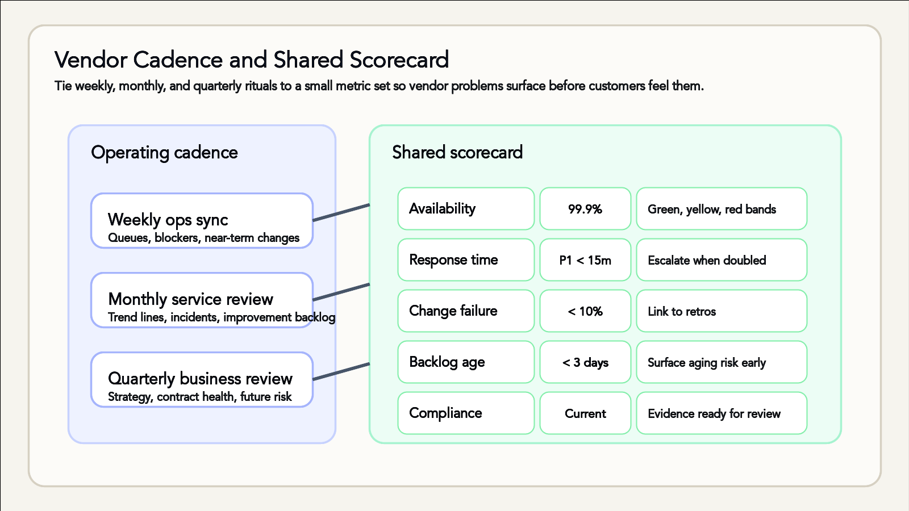

Vendor Management Rhythms
Keep outsourced partners aligned with start-up velocity
- Ever had a vendor who thinks "urgent" means "next week"? Rhythms fix that.
Why cadence matters
- Vendors extend your team but follow different incentives and clocks.
- Predictable rituals surface risks early before they hit customers.
- Rhythm builds trust: expectations, response times, and accountability tighten.
Core meeting cadence
- Weekly ops sync (30 min): Ticket queues, blockers, near-term deliverables.
- Monthly service review (60 min): KPI scorecard, incident retros, improvement backlog.
- Quarterly business review (90 min): Strategic alignment, contract health, roadmap shifts.
- Anchor rituals to billing or release cycles so stakeholders show up prepared.
- Document outcomes in the shared workspace—no meeting closes without follow-up artefacts.
Vendor security assessments
- Treat security reviews as recurring rituals, not a one-off procurement hurdle.
- Require up-to-date SOC 2 / ISO 27001 evidence and map controls to your data flows.
- Run data-handling tabletop drills: breach notification timing, encryption practices, off-boarding.
- Align vendor access reviews with your internal identity governance cadence.
Contract negotiation basics
- Define the difference: SLAs commit to performance, SLRs describe reporting—negotiate both.
- Tie penalty clauses to business impact (credit for downtime, remediation timelines, escalation paths).
- Specify exit strategies: data export formats, transition assistance, knowledge transfer windows.
- Capture renewal notice periods and price-uplift caps inside the master services agreement.
Cultural fit checkpoints
- Observe vendor-team rituals: stand-ups, retros, documentation habits—do they match your pace?
- Meet the delivery leads who will work day-to-day, not just the sales crew.
- Align on communication norms (channels, response times, decision logs) before signing.
- Use pilot projects or trial sprints to test collaboration chemistry safely.
Designing the scorecard
- Blend SLAs/SLRs (uptime, response) with adoption and satisfaction signals.
- Track leading indicators: backlog age, staffing ratios, change failure rate.
- Pull data from shared dashboards; freeze snapshots before each review.
- Use traffic-light status to trigger escalations and executive visibility.
- Example metric bands: API response time <200ms (green), 200–500ms (yellow), >500ms (red).

Meeting cadence on the left feeds the shared scorecard on the right
Scorecard template snapshot
- Availability (SLA): Green ≥ 99.9%, Yellow 99.5–99.89%, Red < 99.5%.
- First-response time (SLR): Green <15m P1 / <1h P2, Yellow double the target, Red >4x target.
- Change failure rate: Green <10%, Yellow 10–20%, Red >20%.
- Backlog age (critical tickets): Green <3 days, Yellow 3–5, Red >5.
- Stakeholder NPS: Green ≥50, Yellow 20–49, Red <20.
- Compliance status: Green = audits current, Yellow = evidence pending, Red = gap identified.
Running the weekly sync
- Start with a three-slide deck: numbers, escalations, upcoming changes.
- Confirm ownership on every red/yellow metric with due dates.
- Capture blockers requiring internal help (access, decisions, budget).
- Close with "no surprises" check: launches, audits, peak demand.
Monthly service review ritual
- Walk through the scorecard trend lines, not just last month's value.
- Highlight incident learnings and verify action item closure.
- Revisit capacity forecasts and staffing assumptions for the next 60 days.
- Agree on 2-3 experiments or optimisations before the next review.
- Celebrate wins and recognise vendor team contributions to maintain relationship health.
Crisis management drills
- Pre-build a shared incident channel, escalation ladder, and on-call rotation map.
- Run joint simulations for vendor outage, data breach, and sudden demand spikes.
- Define decision authority for rollback, customer comms, and regulatory notifications.
- Capture learnings in a post-mortem template shared across companies.
Make-vs-buy guardrails
- Reassess quarterly: does outsourcing still unlock speed or introduce drag?
- Model total cost: subscription, integration effort, shadow teams, compliance overhead.
- Evaluate strategic control: IP sensitivity, customer intimacy, regulatory obligations.
- Document thresholds that trigger RFPs or insourcing explorations.
Case study: Stripe vs. building payments
- Speed: Stripe SDKs let you launch in weeks; in-house build requires new headcount.
- Cost: Fees look high, but compare to hiring, PCI scope, 24/7 monitoring.
- Control: Outsourcing reduces roadmap control; negotiate premium support for reliability.
- Risk: Stripe's redundancy is proven; your custom stack must reach the same bar.
Case study: Zendesk vs. building support ops
- Speed: Zendesk templates, macros, and AI triage accelerate support launch within days.
- Cost: Subscription plus integration vs. hiring, training, and managing a 24/7 support desk.
- Control: Platform roadmap dictates feature availability; in-house team can craft bespoke workflows.
- Risk: Vendor outage impacts customer service; internal team faces burnout without mature processes.
Documentation + tooling
- Centralise agendas, scorecards, and action logs in a shared workspace.
- Version notes and decisions to protect institutional memory through turnover.
- Automate reminders via your ticketing or CRM to chase overdue items.
- Store vendor runbooks alongside incident response and onboarding guides.
- Future you will thank present you for taking notes—future you is less patient with mystery decisions.
Takeaways for founders
- Ritualise touchpoints so vendors feel part of the operating rhythm.
- Keep scorecards visible—green metrics get celebrated, red ones trigger swift support.
- Treat make-vs-buy as a living decision, not a one-off slide.
- Document relentlessly; future you (or your successor) will need the receipts.